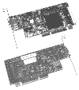

|
|
| 当前位置：电脑报电子版 > 1999 年 > 47 期 > 评测与市场 > 八块专业显示卡测试 |
| 《 八块专业显示卡测试 》 |
参测样品简介 丽台公司L2800、L300VX 丽台公司送测的L2800和L300VX其实就是3Dlabs的GVX1和VX1。L2800是一款较高档的图形加速卡，它采用GammaG1加GlintR3的芯片组合。GammaG1负责几何运算，GlintR3负责对3D有关的处理，两块芯片配合得天衣无缝，同时提供几何和光源硬件加速。L2800还采用独特的虚拟纹理技术，这种技术可以认为是AGP技术的扩展。简单地说就是使用板载的显存缓冲存储在系统内存中的大纹理，它允许操作256MB大小的纹理。3Dlabs的技术资料表明，这一技术可以在不损失图像质量的情况下提供30倍于普通AGP纹理的容量和效率。它还专对奔腾Ⅲ SSE指令集设计，并且有优化的OpenGL驱动程序。L2800上还有一块能够连接18英寸数字平板显示器的SIL150芯片和一个TV Out端子，使其工作范围大幅扩展，它支持1920×1200的分辨率，通过升级驱动程序，还提供对2048×1536分辨率的支持，也支持硬件MPEG－2动态补偿。 L2800的主3D芯片GlintR3设计独到，它完全支持OpenGL1.2，提供单像素光源凹凸映射。在单一时钟周期，它支持双重双线性mip－mapping和三重纹理混合。这些高级特性使L2800在本次测试中大放光彩，大多数测试项目的成绩都名列前茅。它在DRV－06、DX－05、Light－03、Pro/E、Animation五项测试中位居第一，尤其是在Pro/E中的线框速度更是远远超过其它样品，这得益于它独立的几何运算芯片GammaG1。这款加速卡最适合于线框很多，光源迭代运算繁重的设计应用，因此使用Pro/E、MAYA、Softimage的用户会对它十分满意。不过L2800的价格超过10000元，非专业用户大概是无福消受了。 L300VX可以说是L2800的缩小简化型号，它只采用了GlintR3芯片，去掉了昂贵的GammaG1，也没有连接数字平板显示器的SIL150芯片。另外它采用的显存也由L2800的8ns SGRAM改为7ns SDRAM。这些措施使L300VX的价格比L2800大大下降了。但有关性能特征，如分辨率和3D特性等，L300VX和L2800是相同的。 和L2800相比，L300VX的速度当然有所不及，但它在AutoCAD测试中的成绩分外耀眼，仅以非常微弱的差距列于Permedia3之后，另外它对各种软件的兼容性也相当不错，从《古墓丽影Ⅲ》到Pro/E，L300VX都能胜任。对于常用到AutoCAD的用户，例如中小型建筑公司（多数建筑类软件的核心是基于AutoCAD），L300VX是一个不错的选择，如果它3000元左右的价格能再下降一些，就更好了。 ELSA公司GloriaXXL、SynergyⅡ ELSA公司是一家老牌专业图形加速卡公司。早期它曾以3Dlabs公司的主芯片为基础开发专业加速卡。当3Dlabs公司停止向ELSA供货后，它将芯片的需求转向nVidia，现在是世界唯一一家能够以TNT2芯片为基础生产专业加速卡的公司。参加本次测试的GloriaXXL是ELSA公司采用3Dlabs图形芯片时期开发的顶级大作，它采用Gamma加GlintMX的配置，并使用Permedia2和2MB SGRAM用于图形界面引导，它支持1920× 1200分辨率，比较有特色的是，它还支持非常高档的16：10宽屏幕显示器和3D立体液晶眼镜。GloriaXXL 的3D特性包括纹理MIP－mapping、几何加速、抗混叠技术、雾化、覆盖等等。由于拥有Gamma芯片，GloriaXXL在线框处理较多的场合，如Pro/E、DataExploer等软件中有很强的优势，而且经过多年持续不断地改进，XXL的软件兼容性已经非常完善。XXL的缺点在于2D速度较慢，在AutoCAD和SolidWorks等以2D为主的软件测试中成绩不够理想，如果用户只接触高档3D设计软件，XXL还是值得考虑的。 SynergyⅡ则是ELSA生产的“另类”风格的代表，它采用了nVidia TNT2芯片，加上ELSA自己开发的全新WindowsNT OpenGL驱动程序，成为了唯一的“专业级TNT2”。 SynergyⅡ有16MB和32MB两种规格，同样支持1920×1200的分辨率。TNT2并不是专门设计的专业图形加速芯片，它支持的3D特性相信大家都比较清楚，包括单通道多材质、MIP mapping、高洛德渲染、雾化等。 从测试的成绩来看，SynergyⅡ在各专业软件中的速度还是相当不错的，不少项目中可以和Permedia3、VX1等入门级专业加速卡匹敌，在CAD类测试中，SynergyⅡ的成绩也居于前列。但由于TNT2芯片的先天不足，SynergyⅡ在一些专业软件中的兼容性受到影响，主要集中于高端3D设计类软件，如果ELSA能够进一步完善SynergyⅡ的驱动程序，并降低价格，它的前景相当光明。 帝盟公司FireGL1 FireGL1是由大名鼎鼎的图形卡公司Diamond和PC巨头IBM携手开发的专业图形加速卡，它采用IBM针对Windows NT开发的第一个图形芯片。只使用了一枚“ALL IN ONE”芯片的FireGL1板卡面积非常小，和许多比MicroATX机箱还长的专业卡比较起来，它更像一块高档的家用图形卡。FireGL1的用料非常高档，板上共布置了16枚Simens 6ns SGRAM，芯片，其显存的通道宽度更是首屈一指，它是世界上第一块256位引擎的图形加速卡。FireGL1具有多线OpenGL驱动并支持奔腾Ⅲ SSE，它支持的最大分辨率为1920×1200，在Windows NT下同时支持四个显示器。其3D特性包括：集成多边形建模引擎、24位RGB双缓冲、24位Z－缓冲、点采样、YUV－RGB等。FireGL1不仅仅拥有256位核心，也采用双128位通道和帧缓存连接。256位特性使它在需要大数据量交换的专业软件应用上占有很大优势，它在ProCDRS－02、Awadvs－03 Fill Rate、SolidWorks等测试中取得了第一，另外在Indy3D的MCAD40和MCAD150两项测试中仅仅次于E＆S的Lighting1200，位居亚军。对于一块单芯片的专业卡来说，能够取得这样好的成绩也是非常令人惊异的。帝盟和IBM两强联手使得FireGL1在各种专业软件的兼容性测试中表现非凡。由于本身性能强劲，而又没有专门的几何加速芯片，FireGL1对CPU性能比较依赖，一块低档的CPU是无法让它发挥出所有潜力的，因为FireGL1的设计思想是多线程操作，将几何运算交给双处理器工作站的第二颗CPU，这决定了在单一CPU系统中，它无法发挥出最大性能，所以从某种程度上说，本次测试对FireGL是“不公正的”。另外，FireGL1的价格也在万元档次上，和L2800差不多，就成本而言，这一价格显得高了一些。 E＆S公司Galaxy、Lighting1200 E＆S公司是一家真正的专业图形加速卡生产商，Galaxy和Lighting1200是面向低端专业卡市场的产品。其实它们的差别并不大，只是3D渲染芯片有所不同。这两块加速卡有一个显著的特色，都使用了E＆S的传统优势显存——3DRAM和CDRAM。这两种显存都来自三菱公司，并不常见。3DRAM是专门为3D图形设计的一种双通道显存，速度非常快，价格当然也非常昂贵，它特别适合用于动画处理，因此Galaxy和Lighting1200在SoftImage和MAYA等软件中的渲染速度完全可以和一般UNIX工作站用的显卡相抗衡。E＆S的这两块加速卡囊括了Indy3D测试中所有项目的第一名，Lighting1200获得MCAD40、MCAD150两个项目的冠军，而Galaxy则取得Simulation、ImageQuality、Fixed Rate、PolygonRate四个项目的第一名，尤其是后三项测试中，Galaxy更是将对手抛得老远，显示了强劲的实力。Galaxy和Lighting1200的最强之处在于动画和仿真应用，国外有很多游戏公司在E＆S的图形加速卡上运行SoftImage和MAYA，因为速度和画质都很杰出。在测试中我们发现Galaxy和Lighting1200的色深选择只有一种——32Bit，似乎这两块显卡只是为动画和模拟这些对颜色、画质要求较高的应用而诞生的。 Galaxy和Lighting1200也并非全无弱点，首先，这两块卡上的RAMDAC只有175MHz，严重限制了它们在高分辨率下的应用。另外Galaxy和Lighting1200在AutoCAD测试中的速度慢，证明它们的2D引擎比较差劲。E＆S的这两款加速卡最适合只玩3D基本不接触2D的用户。 耕宇公司Permedia3 台湾显卡生产商耕宇公司这次送测了一块Permedia3，耕宇公司证实将继续生产Permedia3，并且已经投放市场，这使得前一段时间对Permedia3停产的流言不攻自破。这块Permedia3使用了4片2M×32的SEC－G7显存，和3Dlabs原产的显卡相比，耕宇的这块卡重新设计的电路。由于这块卡采用了风扇主动散热，所以使用时温度比较低。Permedia3是本次测试中最廉价的专业图形加速卡，不过在测试中的表现倒并不“掉价”，在AutoCAD的测试中它击败了众多强手脱颖而出。另外，这款产品的兼容性也很出色，一般非公版设计的加速卡总会在兼容性上出问题，特别是高端的图形软件，Permedia3则经受住了考验。 由于没有Gamma几何加速芯片，Permedia3在高端软件如Pro/E、SolidWorks等测试中成绩一般，不过以其2000元左右的价格来说，也不应该有过高的要求，它可能是目前能买到的最廉价的专业图形加速卡了，对于3D图形发烧有来说，非常适用。 测试完成后我们做了一个实验，将Permedia3的BIOS刷新为3Dlabs VX1，WindowsNT即将它识别为VX1显卡，并能正常使用，看来Permedia3和VX1并没有什么差异，它们的核心其实是一样的。 总 结 这一次专业图形加速卡的测试花费了我们无数的精力和时间，我们希望能够通过这次测试让大家明白专业级显卡到底“专”在何处，不同的专业卡的“对口”专业又是什么。现在我们可以大致知道，基于3Dlabs图形芯片的卡一般对CPU能力要求不高，兼容性很好，适用于Pro/E、Pro/D（Pro Designer）、AutoCAD等工程软件上。这一类应用中，丽台L2800、L300VX和Permedia3都是不错的选择。E＆S公司的加速卡更适合用于要求高画质、高动态的动画、模拟场合。帝盟FireGL1是一块各方面都很均衡的显卡，兼容性也很好，应用范围很广，如果配置较高，CPU够强力，选择它也不错。ELSA公司的新产品SynergyⅡ性能还是很不错，而且价格也还并不算太贵，可惜其兼容性还有缺陷，希望能够尽快改进。耕宇公司的Permedia3在测试中表现良好，其价格更是诱人，是普通用户的上佳选择。这次的测试已经告一段落，但大家不久就会看到诸如Permedia4、Realimage4000、Quardo等新一代专业加速卡面世，我们期待在下一次测试中，能够让这些新生代登台亮相并一较高下。 |
| 下载本期推荐软件 | 页 首 |
| 《电脑报》版权所有，电脑报网站编辑部设计制作发布 |